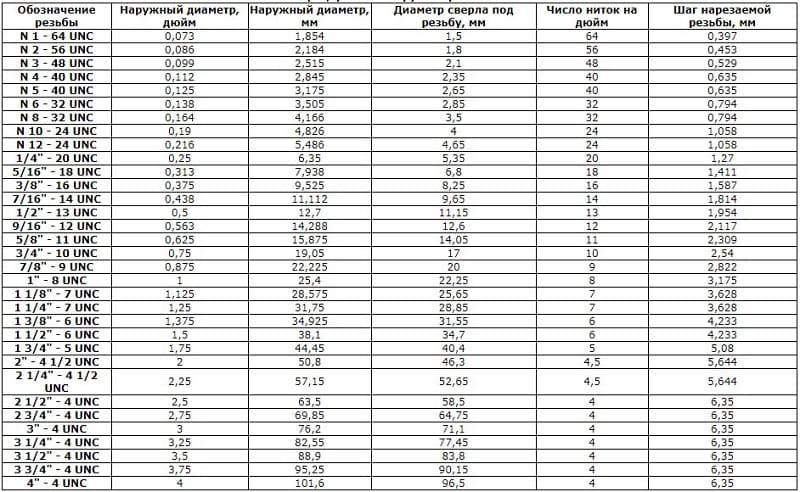

Резьба UNC дюймовая американская
Автор: Андрей Горбунов
В странах с английской системой мер используются резьбы дюймовой размерности. Далее рассмотрен наиболее распространенный вариант – резьба UNC.
Она является дюймовой цилиндрической резьбой с крупным шагом. Угол при вершине равен 60°. Она аналогична метрической по геометрии. Основное отличие состоит в указании размеров в дюймах в соответствии со стандартом Unified Thread Standard. Помимо UNC, данный стандарт включает трубные цилиндрический, конический и конический топливный варианты (NPSM, NPT и NPFT соответственно).
Резьба UNC представляет собой наиболее распространенный вариант дюймовой резьбы в мире. Она является усовершенствованной модификацией резьбы BSF. Отличия состоят в изменении угла профиля на 60° с 55 и применении плоских вершин профиля в 1/8 шага вместо скругленных. Впадины наоборот обычно плоские, но могут быть и скругленными.
Резьба UNC, как и варианты с крупным шагом в целом, характеризуется высокой прочностью и надежностью: она хорошо сопротивляется срыванию и замятию. Она имеет общемашинно-строительное применение. Наиболее обширно распространена в США и Канаде. Данную резьбу описывают стандарты ISO 725, ANSI/ACME B 1.1, BS 1580. В ГОСТ СНГ она не регламентирована.
В соответствии с ANSI B1.1 для обозначения вариантов резьбы UNC используется номинальный диаметр. Однако, более точно параметры соединений отражают значения наружного и внутреннего диаметров. Частота витков связана обратной зависимостью с шагом и диаметром.

Номинальный диаметр для резьбы UNC составляет до 4‘’. Наружный и внутренний диаметры равны от 1,854 и 1,5 до 101,6 и 96,5 мм. Частота витков составляет от 64 до 4 на дюйм при шаге от 0,397 до 6,35 мм. Весь перечень вариантов указан в таблице стандарта.
Обозначение рассматриваемой резьбы включает буквенное указание, отражающий тип (UNC), и цифровой индекс, обозначающий диаметр (в дюймах). В некоторых случаях используются дополнительные обозначения. Они могут отражать шаг (через тире) и направление. Для небольших вариантов (менее 1/4’’) применяют особые маркировки. Это обусловлено их затрудненным измерением. Обозначения включают номера (от 0 до 12) и частоту витков (через тире). Для примера можно рассмотреть 1/4” – 20UNСх2 1/2”.
Резьбу UNC создают путем снятия части материала с поверхностей цилиндрических и конических заготовок. Это осуществляют на станках. В зависимости от типа применяют метчики и плашки (для внутреннего и наружного соответственно).